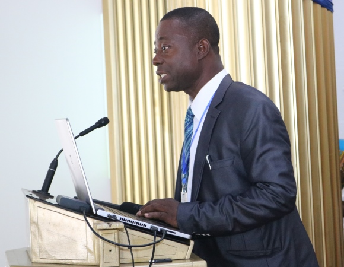
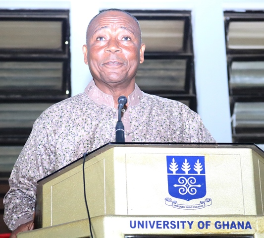

Economic Inclusion and Poverty Eradication Project
Economic Inclusion and Poverty Eradication Project (EIPEP)
The Institute of Applied Science and Technology (IAST), University of Ghana, has launched the Economic Inclusion and Poverty Eradication Project (EIPEP) workshop to discuss, plan and implement strategies to achieve a total poverty free country. The opening ceremony of the workshop held on 14th August, 2017 was attended by dignitaries, Ministers of state, traditional leaders, small scale farmers, business people, investors, academia and researchers.

Prof. Oduro Nkansah, Director of Institute of Applied Science delivering an address
Dr. Emmanuel Kwaku Asiedu, CEO of Gratis Foundation presided over the Opening Ceremony as chairman, with Dr. Daniel McKorley and Mr. Moses Foh-Amoaning as Co-Chairs. In his opening remarks, Dr. Asiedu noted that Ghana is full of resources and has enough fertile land for growing food crops. “The poverty gap in Ghana is a technological gap”, he commented. He further entreated Ghanaians to promote indigenous technology to improve agriculture and be part of the solution to the poverty canker.
Executive Chairman, McDan Group of Companies, Daniel Mckorley advocated attitudinal change as key to achieving the goal of a poverty free country. In his brief remarks, Moses Foh-Amoaning hinted that “poverty is a security problem, adding that practical education was necessary to eradicate poverty. The service industry, he put forward, would also be keen to provide services to push Ghana’s development.
Earlier, Prof. Ebenezer Oduro-Owusu, Vice-Chancellor of the University of Ghana, extended a formal note of welcome, and urged participants to ensure they have fruitful and frank discussions which would lead advance the poverty eradication debate, while proposing workable solutions.
Hon. Gifty Twum-Ampofo, Deputy Minister for Gender, Children and Social Protection, requested that in addressing poverty, technological equipment be devised to aid the physically challenged in society as they constitute a higher percentage of the poor in the country. She appealed to Ghanaians to patronize locally made products to promote the industry.
In his statement, Hon. Alhaji Boniface Abubakar Sadique, Minister for Inner City and Zongo Development, asserted that development in Ghana has been discriminatory, and said the President through the Inner City and Zongo Development Ministry will develop a fair equitable and an all-inclusive society. He stated that helping the Zongos will integrate old societies and create a sustainable society. “Development of Zongo and Inner city will be a manifestation of success of these programs”, he added.

Hon. Alhaji Boniface Abubakar Sadique, Minister for Inner City and Zongo Development giving an address
Prof. George Nkansah, Director of IAST, UG, said government’s policy would have to reflect its commitment to support the eradication of poverty. “We cannot leave poverty eradication to government alone. All of us specifically the business community must be in the fore-front, with the government rather behind giving us the push”, he stated.
Dr. Noskim Atidigah, General Manager, Federated Co-operative Multi-Purpose Society Limited, impressed upon the Government to allow the establishment of a Co-operative Bank that will be under the regulation of the Ministry of Trade and Industry or the Department of Co-operative. He stated that “Ghana requires a new financial paradigm to free itself from the shackles of the so-called developing countries syndrome.
The EIPEP workshop is an exclusive Ghanaian Solution designed to engage stakeholders in the general economic development of Ghana through the adoption of practical solutions and innovative technologies. It seeks to eradicate poverty in the long term. It is a cooperation between Bulaiza PLC, Federated Co-operative Multi-Purposed Society Ltd., and the IAST (University of Ghana). The workshop which seeks to be a very useful resource and aid to policy makers and general government agenda for poverty reduction continues till Friday 18th August, 2017.